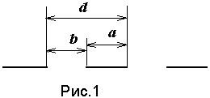
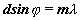
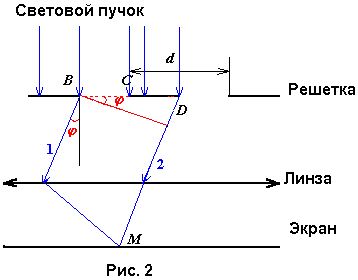
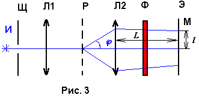
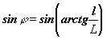

Определение длины электромагнитной волны методом дифракции Фраунгофера
1. Цель работы
Исследовать явление дифракции электромагнитных волн. С помощью дифракционной решетки проходящего света измерить длины электромагнитных волн видимого диапазона
2. Основные теоретические сведения
Дифракцией называется совокупность явлений, наблюдаемых при распространении света в среде с резкими неоднородностями ( например, вблизи границ непрозрачных тел, сквозь малые отверстия и т.п.) и связанных с отклонениями от законов геометрической оптики. В частности, дифракция приводит к огибанию световыми волнами препятствий и проникновению света в область геометрической тени. Явление дифракции заключается в перераспределении светового потока в результате суперпозиции волн, возбуждаемых когерентными источниками, расположенными непрерывно.
Дифракция световых волн, являющихся частным случаем волн электромагнитных, может быть объяснена с помощью принципа Гюйгенса- Френеля. Согласно этому принципу, каждая точка среды, до которой дошел волновой фронт, может рассматриваться как точечный излучатель вторичной сферической волны, причем излучатели когерентны между собой. Огибающая вторичных сферических волн определяет форму волнового фронта в следующий момент времени. Угол j, на который отклоняется волна от первоначального направления при дифракции, называется углом дифракции.
Наблюдение дифракции осуществляется обычно по следующей схеме.
На пути световой волны, распространяющейся от некоторого источника, помещается непрозрачная преграда, закрывающая часть волновой поверхности световой волны. За преградой располагается экран, на котором возникает дифракционная картина.
Различают два вида дифракции. Если источник света и экран расположены от препятствия настолько далеко, что лучи, падающие на препятствие, и лучи, идущие в точку наблюдения на экране, образуют практически параллельные пучки, то говорят о дифракции Фраунгофера или дифракции в параллельных лучах. В противном случае говорят о дифракции Френеля. В данной лабораторной работе для исследования дифракции Фраунгофера используется дифракционная решетка проходящего света, которая представляет собой совокупность узких параллельных щелей, расположенных в одной плоскости (рис.1). Ширина всех щелей одинакова и равна b, а расстояние между щелями равно a. Величину d=a+b называют периодом (постоянной) дифракционной решетки. Если полное число щелей решетки равно N, то длина дифракционной решетки равна r=Nd. Обычно, длина щелей много больше периода решетки, а ширина щели b³ l .

Дифракционные решетки являются главной частью дифракционных спектрометров- приборов, предназначенных для измерения длин волн электромагнитного излучения, проходящего сквозь них. Найдем аналитическое выражение для определения длины волны света с помощью дифракционной решетки. Пусть когерентные волны 1 и 2 падают на решетку нормально к ее поверхности и дифрагируют под углом j (рис.2). При наблюдении в параллельных лучах под углом j между лучами соседних щелей возникает одна и та же разность хода d •sin j . Пройдя дифракционную решетку, волны интерферируют в плоскости экрана. Если в точке наблюдения М наблюдается интерференционный максимум, то разность оптических длин путей 1 и 2 должна быть равна целому числу длин волн:
Dx= ml m=0,1,2¼ (1)
Таким образом получаем:

m= 0,1,2,¼ (2)
Очевидно, что две любые другие волны, аналогичные волнам 1 и 2 и проходящие на расстоянии d друг от друга, дадут вклад в формирование максимума в точке М, который называется главным максимумом. Условие m=0 в формуле (2) соотвктствует значению j =0 и определяет интерференционное условие для центрального максимума, формируемого недифрагированными волнами, приходящими в центр экрана в одной фазе. При дифракции лучи могут отклоняться от первоначального направления распространения как влево, так и вправо. Отсюда следует, что дифракционный спектр должен быть симметричен относительно центрального максимума. Обозначим углы дифракции j для максимумов, расположенных слева от центрального, положительными, а справа- отрицательными. Тогда окончательное выражение для главных максимумов в дифракционном спектре:
dsinj= ± ml m= 0,1,2,3,¼ (3)
Значения m называют порядком дифракционного максимума. Главные максимумы различных порядков разделены в дифракционном спектре интерференционными (главными) минимумами, в которых волны складываются в противофазе и гасят друг друга попарно. Наряду с главными максимумами и минимумами в дифракционном спектре присутствуют добавочные максимумы и минимумами, возникающие при интерференции дифрагированных волн, проходящих сквозь дифракционную решетку на расстояниях d1> d или d2< d одна от другой.
Если освещать решетку белым светом, в максимумах каждого порядка должны наблюдаться спектральные линии различных цветов от фиолетового до красного. В соответствии с формулой (3) линия красного цвета должна располагаться дальше от центра дифракционной картины по сравнению с линией фиолетового цвета в максимуме любого порядка. В данной работе измеряются дины волн красного и фиолетового цветов.
Для наблюдения максимумов и минимумов параллельные лучи обычно собирают (фокусируют) линзой, а экран располагают в ее фокальной плоскости. Однако линза не обязательна. Ведь и без нее в точку наблюдения М приходят все лучи от решетки. Если экран расположен достаточно далеко, то сходящиеся лучи, приходящие в точку М, почти параллельны, и разность хода между ними почти такая же, как и между параллельными. В действительности она несколько больше, но если различие в разности хода много меньше, чем l / 2 , то оно не вносит существенных поправок в результат интерференции.
3. Описание лабораторной установки
Установка состоит из источника света “И”, щели “Щ”, линзы “Л1”, дифракционной решетки “Р”, линзы “Л2” , экрана “Э” и светофильтра “Ф” (рис.3). Щель служит для формирования спектральных линий, разрешенных между собой и придания им формы, подобной форме щели. Линза “Л1” предназначена для устранения расходимости светового пучка и получения резкого изображения спектра на экране. Линза “Л2” фокусирует параллельные лучи, идущие от решетки. Экран расположен в фокальной плоскости линзы “Л2”.

Для определения длины волны используется формула (3).
При этом поступают следующим образом. На экране измеряют расстояние l от центра дифракционной картины до центра максимума порядка m. Это расстояние делят на фокусное расстояние линзы “Л2”. Полученное отношение равно тангенсу угла дифракции j. Отсюда

(4)Для выделения монохроматического излучения используют светофильтр.
4. Задание
5. Контрольные вопросы
6. Литература